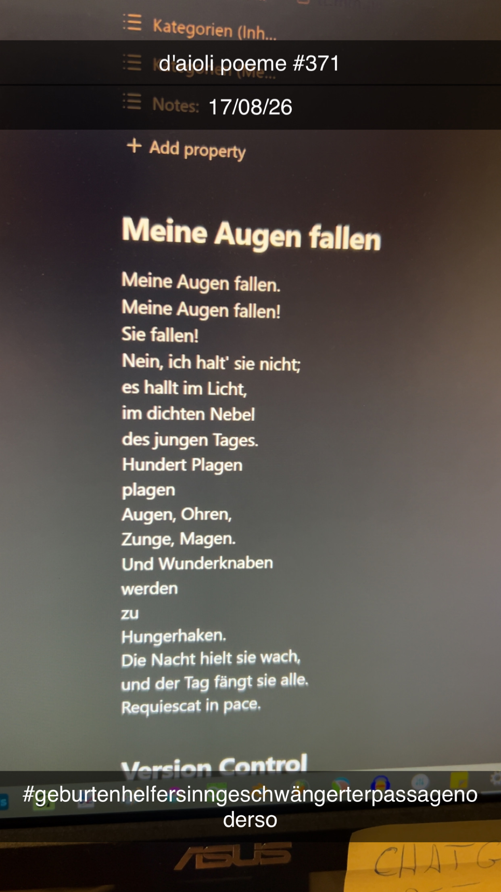

Meine Augen fallen
[371]Meine Augen fallen.
Meine Augen fallen!
Sie fallen!
Nein, ich halt' sie nicht;
es hallt im Licht,
im dichten Nebel
des jungen Tages.
Hundert Plagen
plagen
Augen, Ohren,
Zunge, Magen.
Und Wunderknaben
werden
zu
Hungerhaken.
Die Nacht hielt sie wach,
und der Tag fängt sie alle.
Requiescat in pace.
